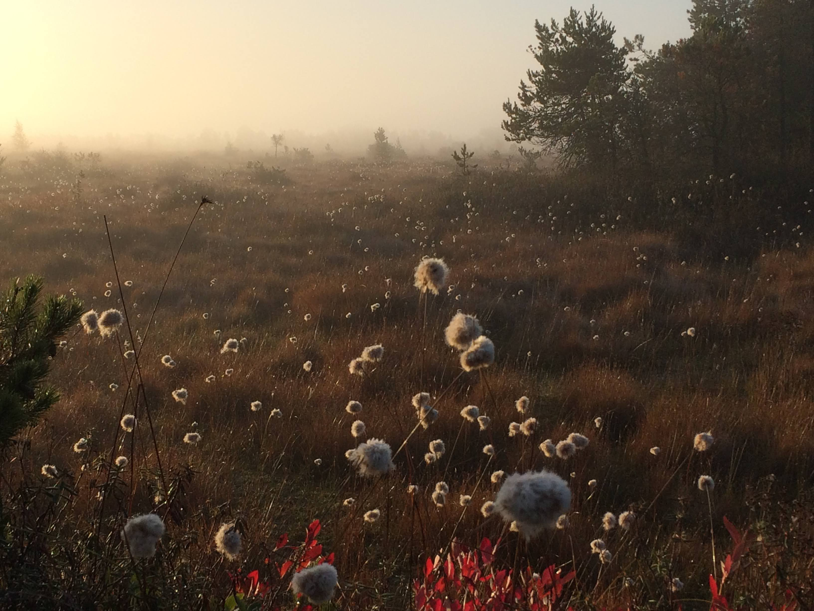
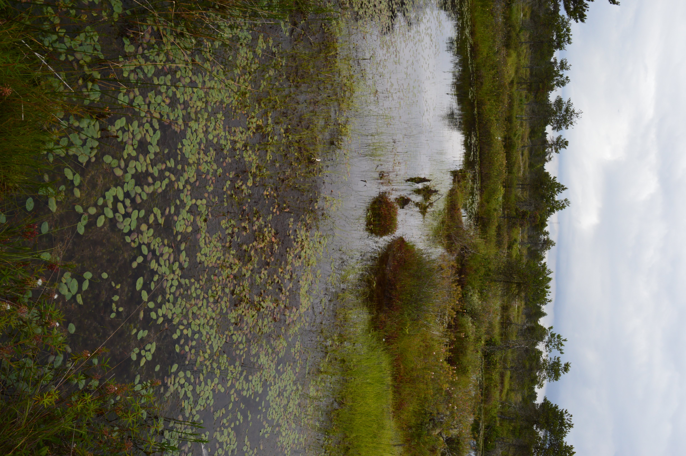

Recherche
Cette recherche est une occasion unique d’améliorer la compréhension et la prévision du rôle potentiel des milieux humides en tant que solutions climatiques fondées sur la nature (NbCS). Ce projet est le plus vaste, complet et intégré de la dynamique des bilans de carbone des milieux humides au Canada à ce jour. Il fournira de nouvelles données indispensables pour réaliser des évaluations solides et fondées sur des preuves de la capacité des milieux humides naturels et perturbés à atténuer le changement climatique. Cette recherche est unique, en ce sens qu’elle intègre toutes les composantes du cycle du carbone, afin de fournir une évaluation solide et réaliste des bilans de carbone et des GES dans les écosystèmes des milieux humides, qui sont d’une importance particulière dans le paysage canadien. En intégrant les flux latéraux et verticaux et en les combinant avec les observations des carottes de sol, ce travail permettra de développer des estimations fiables du bilan net de carbone de l’écosystème (BNCE) et d’évaluer la dynamique du carbone à long terme ainsi que les impacts des perturbations anthropiques sur les milieux humides. Les recherches et collaborations offrent également une occasion unique d’améliorer les modèles biogéochimiques des milieux humides.
Plus précisément, ces travaux permettront d’améliorer la science du cycle du carbone des milieux humides au Québec et au Canada, de fournir des informations clés aux décideurs, d’orienter la gestion et la restauration des milieux humides pour les différents paliers de gouvernement, de contribuer à la comptabilisation de l’atténuation des changements climatiques et de soutenir les initiatives d’action climatique à l’échelle régionale, provinciale et fédérale. De plus, en améliorant les modèles biogéochimiques, il sera possible de mieux quantifier les émissions et les absorptions de carbone provenant des changements d’utilisation des terres et de la gestion des milieux humides au Canada, ce qui réduira l’incertitude dans les rapports d’inventaire canadiens.
Axe 1: Quantifier la séquestration du carbone dans les sols et la biomasse

L’axe 1 vise à documenter le potentiel de séquestration du carbone à moyen (décennal) et à long terme (centenaire) dans les sols et la biomasse des milieux humides dans des conditions naturelles et perturbées. Les stocks de C (kg m-2) et les taux de séquestration de C à long terme (kg m-2 an-1) seront quantifiés dans des conditions naturelles et perturbées dans les quatre catégories de milieux humides (tourbières ouvertes, tourbières boisées, marécages arborés et marais littoraux) afin d’estimer l’impact des perturbations, principalement liées au drainage, sur leur potentiel de séquestration de C. Les bilans de carbone mesurés par les flux verticaux et horizontaux (axes 2 et 3) seront également comparés pour vérifier s’ils correspondent à la variation de la séquestration du carbone dans le sol sur une période de moins de 150 ans. Les résultats de ces comparaisons sont importants à la fois sur le plan technique (c.-à-d. validation de la fermeture du bilan de carbone) et sur le plan scientifique (c.-à-d. exploration de la dynamique à long terme par rapport à la dynamique à court terme des bilans de carbone), et ils permettront d’effectuer : 1) une synthèse des stocks de C et des taux de séquestration dans le sol et la biomasse ligneuse des milieux humides naturels et perturbés du sud du Québec, et 2) le développement d’un outil d’aide à la décision pour cibler les points chauds de C pour la conservation des milieux humides prioritaires. Il est attendu que les milieux humides naturels agissent comme des puits nets de C, alors que les milieux humides perturbés peuvent être des sources de C, l’ampleur de la source augmentant avec le niveau de perturbation.
Axe 2: Quantification des flux verticaux (gazeux) de C et de GES (CO2, CH4 et N2O)

L’axe 2 vise à mesurer les flux de C et de GES tout au long de l’année afin de quantifier les flux verticaux (gazeux) du BNCE dans les milieux humides naturels et perturbés, et d’évaluer la variabilité diurne, saisonnière et interannuelle des flux sous l’effet des facteurs climatiques et environnementaux. Une tour à covariance des turbulences (EC) sera installée dans chaque type de milieu humide, naturel et perturbé, pour un total de 8 tours subventionnées par le MELCCFP. Une 9e tour sera fournie par McGill dans un site restauré près du lac Saint-Pierre (LSP). Ces tours mesureront les flux verticaux (gazeux), y compris l’échange net de CO2 (NEP, qui est l’équilibre entre la productivité brute de l’écosystème et la respiration de l’écosystème) et l’échange net de CH4 (l’équilibre entre la méthanogénèse et la méthanotrophie). Les observations continues de l’EC tout au long de l’année fourniront de solides bilans verticaux annuels de C et de GES pour chaque site.
Bien que des émissions de CH4 plus faibles soient attendues dans les milieux humides perturbées (c’est-à-dire drainées), il est prévu que ces émissions seront compensées par des émissions de CO2 nettement plus élevées, faisant des sites perturbés une source nette de GES plus importante que les milieux humides naturels. Pour chaque site, l’impact des perturbations sur les flux sera également étudié. En outre, la nature quasi-continue de ces mesures de flux de C et de GES, associée à des mesures auxiliaires (par exemple, le rayonnement, la température, l’humidité relative, l’humidité du sol, la profondeur de la nappe phréatique) permettra d’étudier les contrôles dominants sur les flux de GES et d’évaluer comment les flux de C réagiront aux variations du climat et à des régimes de perturbation qui s’intensifient.
Axe 3: Quantifier et modéliser l’équilibre hydrologique et les flux latéraux de carbone (aquatique)

L’axe 3 quantifiera le bilan hydrologique et l’exportation latérale du carbone à partir des milieux humides naturels et perturbés dans une série d’études de cas détaillées, améliorant considérablement la compréhension des mécanismes et processus associés dans chacun de ces écosystèmes. Cela nécessitera une caractérisation détaillée du bilan hydrique et de la connectivité hydrologique avec les eaux de surface et les eaux souterraines dans chacun des écosystèmes ciblés. En outre, une quantification biogéochimique détaillée (y compris le carbone organique dissous (COD), le carbone inorganique dissous (CID), la pression de partition du CO2 et du CH4 (pCO2 et pCH4, respectivement), et la chimie de l’eau) des flux sortants des milieux humides étudiés, y compris les eaux interstitielles et souterraines, sera effectuée. Cela permettra de quantifier les bilans latéraux nets de carbone et de GES des milieux humides naturels et perturbés du sud du Québec. Ces études de cas comparatives permettront d’établir des modèles généraux d’exportation du carbone, basés sur les caractéristiques du paysage et de l’hydrologie, qui seront utilisés pour augmenter l’exportation du carbone au niveau régional. Des modèles mécanistes d’exportation latérale de carbone seront également développés pour évaluer comment les changements induits par le climat et les perturbations humaines peuvent avoir un impact sur cet aspect important du bilan de carbone des écosystèmes des milieux humides. Il est attendu que l’exportation du carbone constitue une composante importante mais variable du bilan de carbone des différents types de milieux humides, mais que dans tous les cas, ces flux latéraux de carbone soient essentiels pour la fermeture du BNCE.
Axe 4: Générer une compréhension intégrée de la dynamique du carbone et des GES dans les paysages perturbés et non perturbés

L’axe 4 intègre tous les résultats des axes 1 à 3 afin de fournir une image complète du BNCE et du bilan net des GES pour chaque écosystème. En s’appuyant également sur les observations et la modélisation, il s’agit de prédire le futur BNCE dans les différents types de milieux humides. Cet axe fournira une image intégrée du carbone actuel et futur ainsi que du bilan de GES de chaque type de milieux humide et de chaque classe de perturbation. Des différences significatives dans le BNCE entre les sites sont attendues, avec la plus grande différence entre les milieux humides naturels et les milieux humides perturbés. En tirant parti des observations pour intégrer de nouveaux processus dans les modèles biogéochimiques des milieux humides (c’est-à-dire les flux latéraux de carbone), il sera possible de mieux prédire le BNCE actuel et futur des milieux humides.